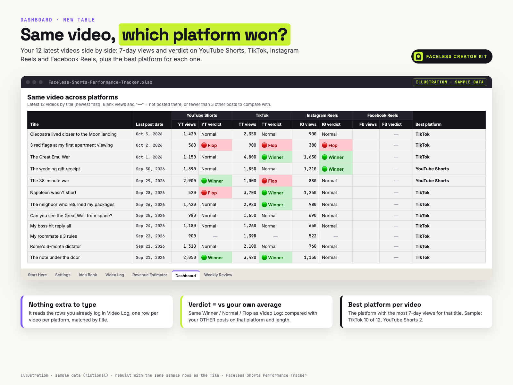
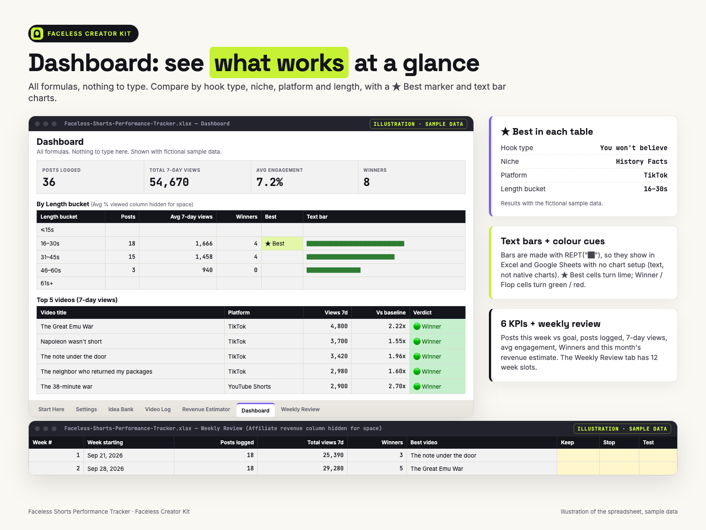
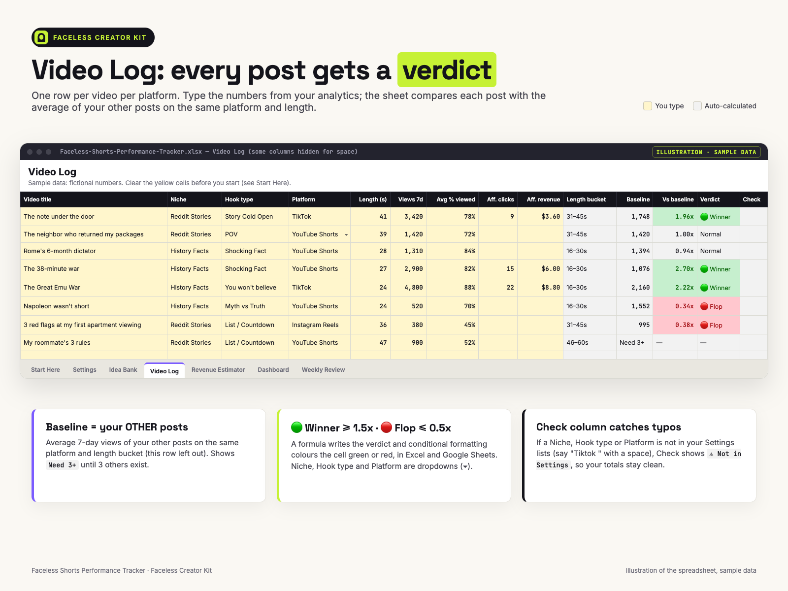
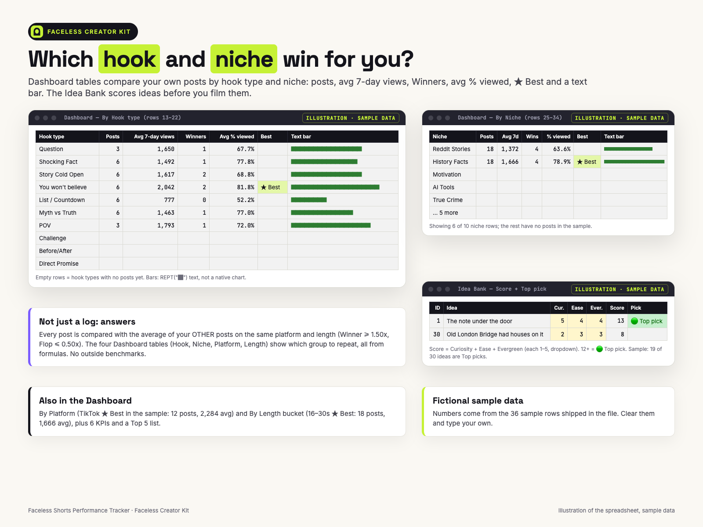
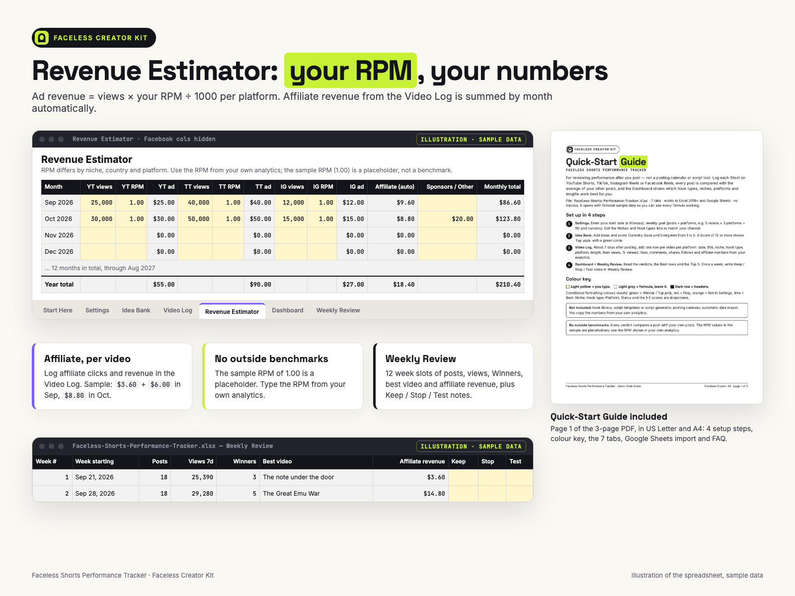
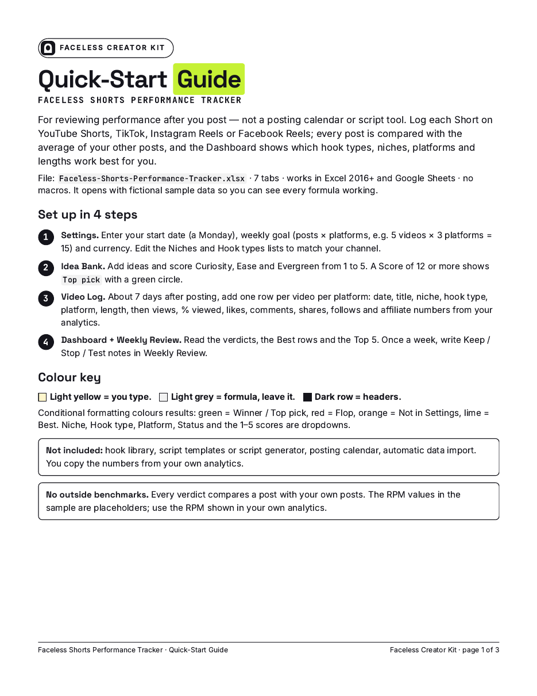
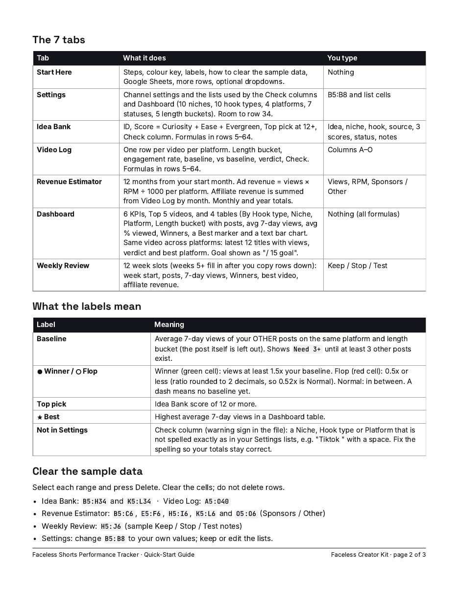
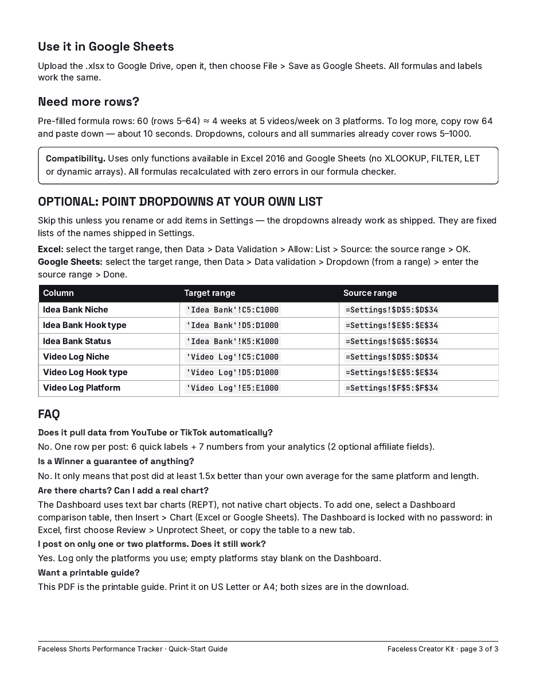

One row per post: 6 quick labels + 7 numbers from your analytics (2 optional affiliate fields). See which hooks, niches and platforms beat your own average.
A spreadsheet that compares each faceless Short with your own other posts and shows which hook types, niches, platforms and lengths work for you. It's for reviewing performance after you post — not a posting calendar, not a script tool. From Faceless Creator Kit, the creator-tools imprint of Hustle Studio.

$12.00 USD, $12 one-time, instant download, no subscription
Buy now: $12 See what's inside the tabs first🔒 Secure checkout. Payment is handled by Waffo Pancake, our merchant of record, which processes the payment and the sales tax and accepts common debit and credit cards. We never see your card details. Right after payment you go straight to the download page.
↩️ 14-day refund, no questions asked. Email chenphien@gmail.com within 14 days of purchase and we refund you in full through Waffo Pancake (see Terms).
✅ Satisfaction guarantee. If the file won't open, or a formula shows an error in Excel 2016+ or Google Sheets, you get a full refund. All 1,510 formulas recalculated with zero errors in our formula checker before release.
✉️ Real support and fixes. One email address, answered by the people who built the tracker, within 2 business days. If we fix a formula, the corrected file goes on the same download page, free for every buyer.
🆕 New shop, honest about it. This tracker is new, so there are no reviews and no buyer screenshots yet, and we won't invent any. Instead, this page shows every tab: the previews below are rebuilt with the file's own sample rows, the 3 Quick-Start pages are the real PDF, and the Settings, Idea Bank and Start Here contents are typed out as text further down.




These previews are illustrations rebuilt with the same fictional sample data as the file, not screenshots. Every number in them matches what the file shows when you open it.



Built with the same sample data: in the TikTok 31–45s group, 3,420 views against the other posts' average of 1,747.5 gives 1.96x, 🟢 Winner.
Buyers asked to see the tabs that aren't in the previews. Below are their real contents, copied from the file as text.
Quick start (4 steps) · Colour key · The 7 tabs · Labels (Baseline, Vs baseline, Verdict, Need 3+, —, Check) · How the baseline works · Clear the sample data (exact ranges for Idea Bank, Video Log, Revenue Estimator, Weekly Review, Settings) · Google Sheets · Need more rows? · Compatibility · Optional: point dropdowns at your own list · Locked tabs (no password) · What's not in this file · Works in.
| Setting | Sample value |
|---|---|
| Channel name | My Faceless Channel |
| Start date (a Monday) | Sep 21, 2026 |
| Weekly goal (posts × platforms) | 15 (5 videos × 3 platforms) |
| Currency | $ |
| Niches (10, editable) | Reddit Stories, History Facts, Motivation, AI Tools, True Crime, Finance Facts, Science Facts, Beauty & Skincare, Fitness & Health, Other |
| Hook types (10, editable) | Question, Shocking Fact, Story Cold Open, You won't believe, List / Countdown, Myth vs Truth, POV, Challenge, Before/After, Direct Promise |
| Platforms | YouTube Shorts, TikTok, Instagram Reels, Facebook Reels |
| Status | Idea, Testing, Scripted, Edited, Scheduled, Posted, Dropped |
| Length buckets | ≤15s, 16–30s, 31–45s, 46–60s, 61s+ |
| # | Idea | Niche | Curiosity | Ease | Evergreen | Score | Pick |
|---|---|---|---|---|---|---|---|
| 1 | The note under the door | Reddit Stories | 5 | 4 | 4 | 13 | 🟢 Top pick |
| 2 | My roommate's 3 rules | Reddit Stories | 4 | 3 | 4 | 11 | |
| 3 | My boss hit reply all | Reddit Stories | 5 | 4 | 3 | 12 | 🟢 Top pick |
| 6 | 3 red flags at my first apartment viewing | Reddit Stories | 3 | 4 | 4 | 11 | |
| 16 | Rome's 6-month dictator | History Facts | 4 | 4 | 5 | 13 | 🟢 Top pick |
| 19 | The 38-minute war | History Facts | 5 | 4 | 5 | 14 | 🟢 Top pick |
| 27 | How sailors told time at sea | History Facts | 2 | 3 | 4 | 9 | |
| 30 | Old London Bridge had houses on it | History Facts | 2 | 3 | 3 | 8 |
Light yellow = you type, grey = formula. Hook type, status and notes columns not shown here. In the sample, 19 of the 30 ideas score 12+ (Top pick). Niche, hook type, status and the 1–5 scores are dropdowns.
| File | What it is |
|---|---|
Faceless-Shorts-Performance-Tracker.xlsx | 7 tabs (Start Here, Settings, Idea Bank, Video Log, Revenue Estimator, Dashboard, Weekly Review), 1,510 formulas, no macros. Sample data: 30 ideas and 36 Video Log rows (12 videos × 3 platforms). |
Quick-Start-Guide_Letter.pdf | 3 pages, US Letter |
Quick-Start-Guide_A4.pdf | The same 3 pages, A4 |
README.txt | Files, supported apps, license |
Faceless-Shorts-Performance-Tracker_FacelessCreatorKit.zip | All 4 files above in one ZIP |
The download page has a separate link for each of the 4 files and for the ZIP.
Most content planners help you schedule posts. This file is for the other half of the job: after a Short has been live for 7 days, what did it actually do, compared with the rest of your channel?
Add one row per video per platform in the Video Log: 6 quick labels (date, title, niche, hook type, platform, length) and 7 numbers from your analytics (48-hour views, 7-day views, % viewed, likes, comments, shares, follows), plus 2 optional affiliate fields. The sheet works out the length bucket and a baseline: the average 7-day views of your other posts on the same platform and length bucket. At 1.50x or more a post is a 🟢 Winner; at 0.50x or less it is a 🔴 Flop. Until a group has at least 3 other posts, it shows "Need 3+" instead of guessing.
The Dashboard answers the questions that decide your next video: which hook type, niche, platform and length bucket get the most views for you, and where the same video did best. A Top 5 list and 6 KPIs (including posts this week against your goal, e.g. "/ 15 goal") sit on top.
The file opens with fictional sample data (30 ideas, 36 Video Log rows = 12 videos × 3 platforms) so every formula is visible before you start. In the sample, 8 rows are Winners and 5 are Flops, and TikTok is the best platform for 10 of the 12 videos. Start Here lists the exact ranges to clear.
Pre-filled formula rows: 60 (rows 5–64) ≈ 4 weeks at 5 videos/week on 3 platforms. To log more, copy row 64 and paste down — about 10 seconds. Dropdowns, colours and all summaries already cover rows 5–1000.
Uses only functions available in Excel 2016 and Google Sheets (no XLOOKUP, FILTER, LET or dynamic arrays). All formulas recalculated with zero errors in our formula checker.
There are no outside benchmarks. "Good" completion rates and RPMs differ by niche and country, so every verdict compares you with you. The sample RPM of 1.00 is a placeholder; type your own.
You can. Here is what is already done for you:
Does it work in Google Sheets?
Upload the .xlsx to Google Drive, open it and choose File > Save as Google Sheets. It uses only functions available in Excel 2016 and Google Sheets.
What if I need more than 60 rows?
Copy row 64 and paste down — about 10 seconds. Dropdowns, colours and all summaries already cover rows 5–1000.
Why does a post show "Need 3+"?
Its platform + length group has fewer than 3 other posts with 7-day views, so there is no fair average yet.
Can I add a real chart?
Yes. The Dashboard uses text bar charts, not native charts. The Dashboard is locked with no password: in Excel choose Review > Unprotect Sheet, then select a table and use Insert > Chart, or copy the table to a new tab.
Want a printable guide?
The Quick-Start PDF is included in US Letter and A4.
Will this get me more views?
No promise of views or income. It shows what is already working on your channel so you can decide what to repeat.
Who answers support, and will it be updated?
The people who built the tracker, at chenphien@gmail.com, within 2 business days. We don't promise new features; if we fix a formula, the corrected file goes on the same download page, free for buyers.
What if it doesn't work for me?
Email us within 14 days for a full refund, no questions asked. If the file won't open or a formula shows an error, that's covered too.
License?
Personal use on your own channels. Please don't resell, share or redistribute the file or the guide.
$12.00 USD, one-time
Buy now: $12🔒 Secure checkout by Waffo Pancake (merchant of record: it processes the payment and tax), common debit and credit cards accepted, instant download after payment. 14-day full refund, no questions asked.
Faceless Creator Kit / Hustle Studio is independent and not affiliated with YouTube, TikTok, Instagram, Facebook, Microsoft or Google.